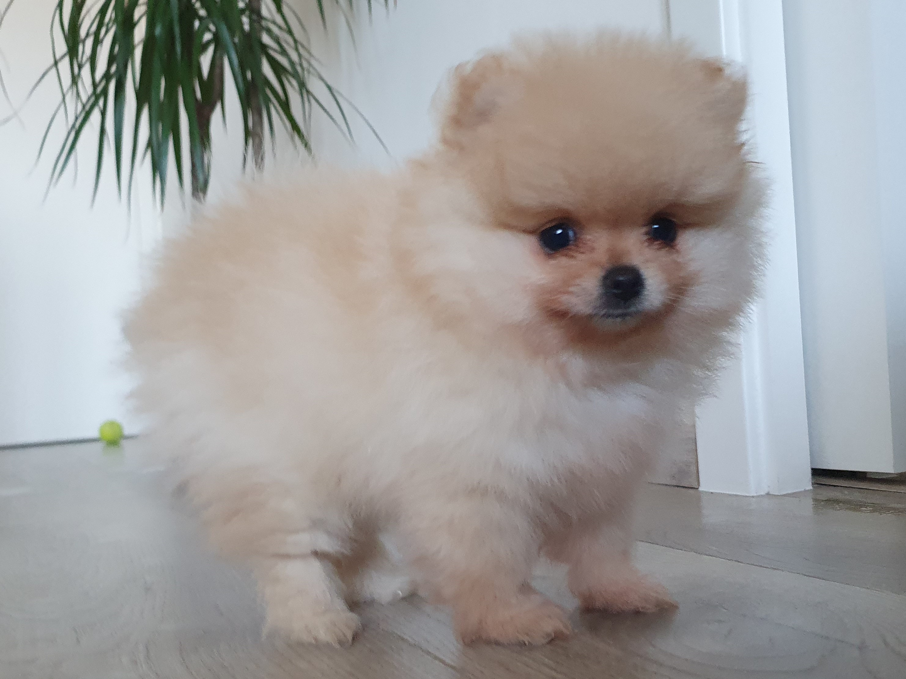

-
Po gymnáziu jsem strávila rok a půl v Londýně a pak odešla do Prahy,
kde už jsem zůstala. Vystudovala jsem statisticko-pojistné
inženýrství a finance jako vedlejší specializaci na VŠE. V rámci
studia jsem půl roku pracovala v Ohiu jako recepční v rušném hotelu.
Nyní přemýšlím nad možností života na vesnici.
-
Druhou polovinu studia už jsem pracovala v agentuře pro výzkum trhu
na poloviční úvazek a tam i pokračovala po studiu až do mateřské.
-
Mám tři děti, 14, 11 a 10 let, a až do minulého roku jsem s nimi
byla doma.
-
V průběhu rodičovské jsem si udělala rekvalifikační masérský kurz a
ve volných chvílích masírovala. V létě 2020 jsem objevila Czechitas
a absolvovala jsem digitální akademii data.
-
Mám ráda knížky, jídlo, procházky, běh, jiné sportovní aktivity
(třeba kanoe nebo lyže a běžky), jsem nadšený propagátor zásad SM
cvičení a v létě jsem si koupila krásné horské kolo, na kterém bych
se ráda naučila aspoň trochu jezdit. Mám ráda vyváženost v
činnostech a lidi s vnitřní integritou.
-
A tohle je naše nové štěňátko, jmenuje se Aike.
